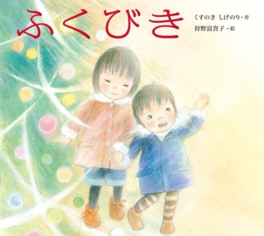

たくさんの絵本の中で たまたま読んでみて 印象に残った絵本を紹介します

幼い姉弟は、お母ちゃんに内緒でクリスマスプレゼントを贈ろうと、
バッグを買いに商店街へ出かけます。
でもおこづかいの80円ではお目当てのバッグは買えません。
そこでお母さんと買い物に行った時にもらった福引券を思い出しました。
ところが、それは補助券で福引をすることはできませんでした。
がっかりして帰ろうとする姉弟。その時・・・。
年末の商店街の福引所で繰り広げられる、小さなドラマです。
お母さんを思う姉弟の気持ち、そんな姉弟をやさしく見守る大人たちの気持ちが 見事に表現されています。
登場人物たちの「やさしい気持ち」「正直な気持ち」「思いやる気持ち」 「親切な気持ち」
師走のあわだたしさの中で、そんな気持ちが人から人へとつながり、 読んでいる私たちの心までほっこりと温めてくれる作品です。
狩野さんのやさしくソフトな絵も、物語の温かさをいっそう引き立てています。